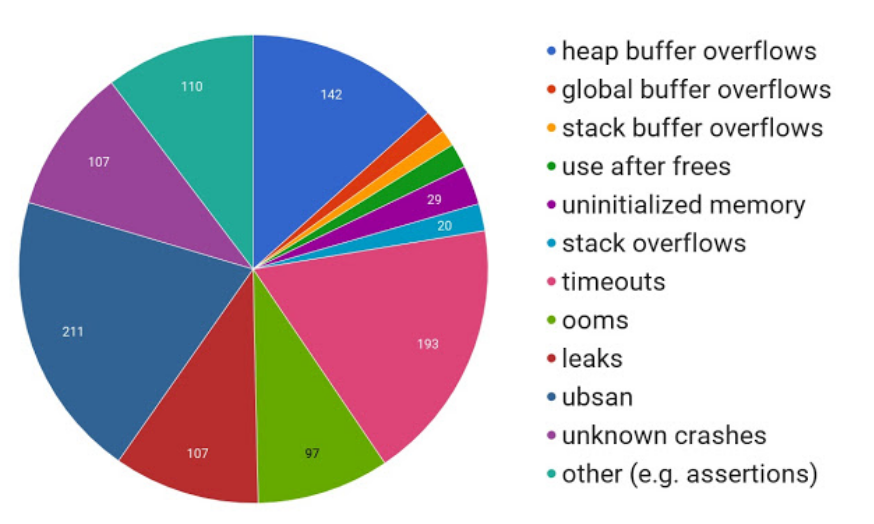
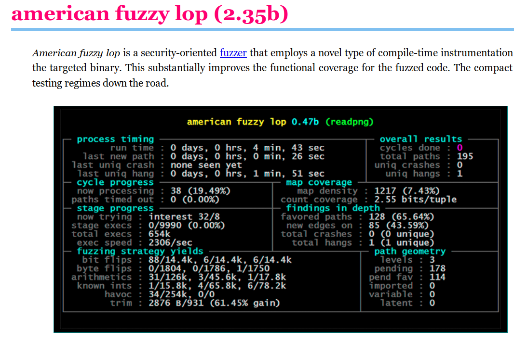
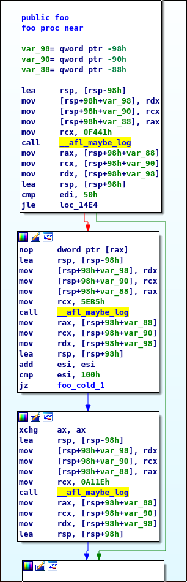
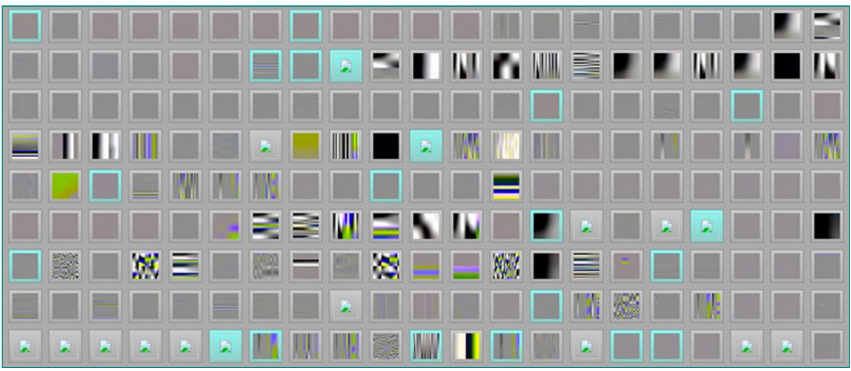

Taesoo Kim

Ref. Sanitize, Fuzz, and Harden Your C++ Code
int foo(int i1, int i2) { int x = i1; int y = i2; if (x > 80) { x = y * 2; y = 0; if (x == 256) { * __builtin_trap(); return 1; } } else { x = 0; y = 0; } return 0; }
// $ clang -fsanitize=fuzzer ex.cc // $ ./a.out extern "C" int LLVMFuzzerTestOneInput(const uint8_t *data, size_t size) { if (size < 8) return 0; int i1, i2; i1 = *(int *)(&data[0]); i2 = *(int *)(&data[4]); foo(i1, i2); return 0; }

if (block_address > elf_text_start && block_address < elf_text_end) { cur_location = (block_address >> 4) ^ (block_address << 8); shared_mem[cur_location ^ prev_location] ++; prev_location = cur_location >> 1; }

1436: mov rcx,0xf441 143d: call 1520 <__afl_maybe_log>

Ref. http://lcamtuf.coredump.cx/afl/
$ wget https://www.dropbox.com/s/7nlsvkg68l70ez8/nutanix.tar.xz # or use: https://tc.gts3.org/public/tmp/1180f-nutanix.tar.xz $ unxz fuzzing.tar.xz $ docker load -i fuzzing.tar $ docker run --privileged -it fuzzing /bin/bash # in docker $ git pull $ cat README